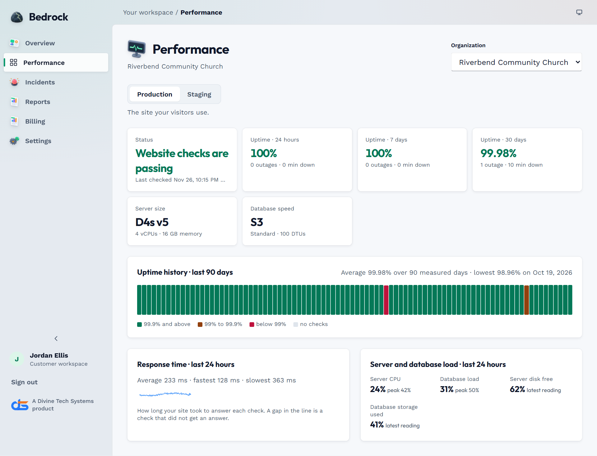

Bedrock
Performance
Performance shows how your website has been doing over time. These are the same figures your DTS team works from. If you have a staging site, use the Production / Staging switch to choose which one you are looking at.

The tiles at the top
| Tile | What it shows |
|---|---|
| Status | The same one-line status as the Overview, and when the site was last checked. |
| Uptime · 24 hours / 7 days / 30 days | The share of checks your site answered in each period, with the number of outages and the total time down. Green is 99.9% or better, amber is 99% to 99.9%, red is below 99%. |
| Server size | The size of the server your site runs on, with its processors (vCPUs) and memory. |
| Database speed | The speed tier of your Rock database. A higher tier handles more work at once. |
Server size and Database speed show a dash when DTS does not host that part for you, or it is not connected to Bedrock yet.
Uptime history
One bar for each of the last 90 days, oldest on the left. Hover over a bar to see the date, that day’s uptime and how many checks ran.
- Green: 99.9% and above.
- Amber: 99% to 99.9%.
- Red: below 99%.
- Grey: no checks that day, for example before monitoring started.
The line above the bars gives the average and the lowest day. To see what happened on a coloured day, open Incidents and choose 90 days.
A short outage turns a whole day’s bar amber or red, because 99.9% of a day is under a minute and a half. One red bar does not mean the site was down all day.
Response time
How long your site took to answer each check over the last 24 hours, with the average, fastest and slowest. A gap in the line is a check that did not get an answer.
Response time is measured from Bedrock’s checker, not from your building, so it will not match exactly what one person sees on their own connection. It is most useful for spotting change: a line that climbs and stays up.
Server and database load
These figures appear once DTS has connected infrastructure monitoring for the environment.
| Figure | What it shows |
|---|---|
| Server CPU | How busy the server’s processor was on average over 24 hours, with the peak. |
| Database load or Database CPU | How much of the database’s capacity was in use on average, with the peak. |
| Server disk free | The share of disk space still free at the latest reading. |
| Database storage used | The share of the database’s storage in use at the latest reading. |
Brief peaks are normal, especially around weekend services and large emails. DTS watches these and raises anything that needs a decision, such as a larger server, in your monthly report.
On the Staging tab
Staging shows the same figures for your test site, plus the Staging server card where you can start, stop and resize the server. See Staging server.
If the page says DTS has not started checks for your staging site yet, the figures appear once checks are running.